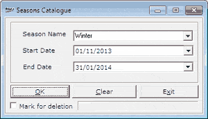

This option is used to catalogue season details. This can be utilisied while defining employee incentives.
How to Reach: Catalogue > Period > Season Catalogue
The Seasons Catalogue window is as shown.

Season Name: Enter or select the name of the season.
Start Date: Select the start date of the season. In case it is an existing season, the start date is displayed. You may modify the same.
End Date: Select the end date of the season. In case it is an existing season, the end date is displayed. You may modify the same.
Mark for deletion: Select if the catalogued season has to be marked for deletion. This season will not be available for use.
Note: Only the seasons that are not used in any transaction can be deleted.